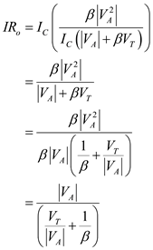

Write the expression for output resistance of the BJT cascode amplifier.
Substitutefor ,for
,for andfor
andfor in the equation.
in the equation.
Write the expression for output resistance of the BJT cascode amplifier.
Substitutefor,forandforin the equation.
The expression for figure-of-merit of the BJT cascode amplifier is,
Substitute for  in the equation.
in the equation.

Thus, the expression for figure-of-merit of the BJT cascode amplifier,is.
Evaluate the value of figure-of-merit.
Substitute  for ,
for ,  for
for  and
and  for
for  in the equation.
in the equation.
Thus, the value of figure-of-merit, is .
Find the value of output resistance for .
Substitute  for
for  in the equation.
in the equation.
Thus, the value of output resistance for is .
Find the value of output resistance for .
Substitute  for
for  in the equation.
in the equation.
Thus, the value of output resistance  for
for  is.
is.
Find the value of output resistance for.

Substitute  for
for  in the equation.
in the equation.
Thus, the value of output resistance  for
for is.
is.